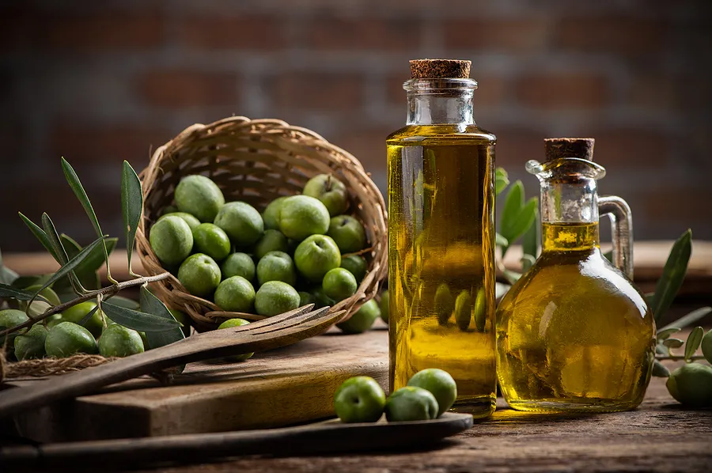
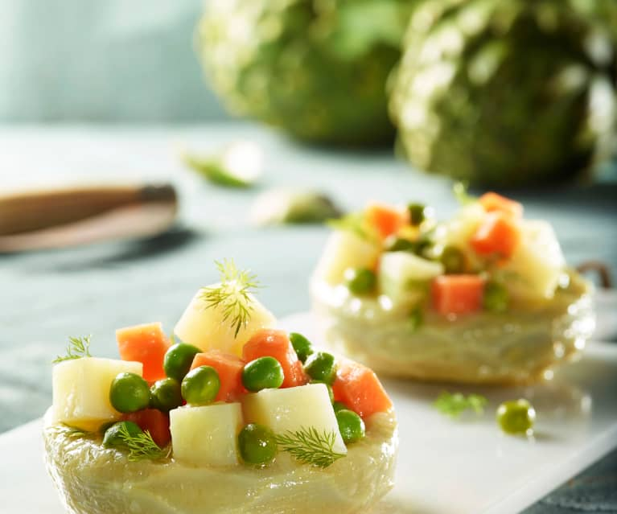
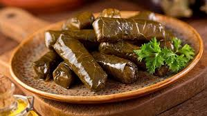
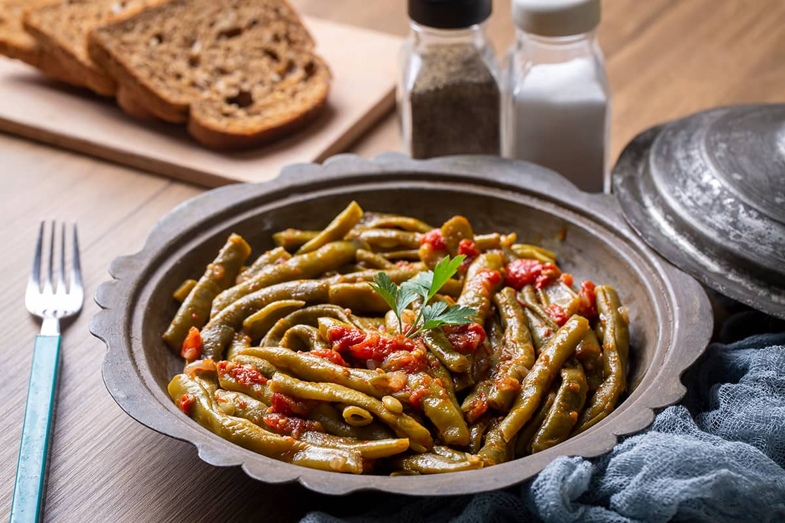

Turkish Olive Oil Dishes
Olive oil has been an essential part of the Mediterranean agriculture, trade, and gastronomy since the 4500s BCE. The amazing Mediterranean stone fruit of olive has turned Türkiye into the second-biggest olive oil producer in the world. Let’s discover together the importance of olive oil production and some of the most popular Turkish olive oil dishes.
The Myth of the First Olive Tree
Legend has it that the ancient Greek gods were asked to bring a gift to the lands over which they ruled. Whoever brought the most valuable gift would be granted the honour of naming the most significant city of the Greek world. Poseidon, the god of the seas, provided the lands with fresh drinking water, whereas Athena, the goddess of wisdom, gave them olive trees to produce, among other things, delicious olive oil. As you might have guessed, Athena won the competition giving her name to Athens. And thus, olive trees started appearing across the lands of the Mediterranean basin.
Olive oil production in Türkiye
If we’ve caught your attention already with some fun mythology, here’s some more information that concerns Türkiye and olives: the oldest olive oil facility, which dates back to 600 BCE, was founded in Türkiye, at the ancient settlement of Klazomenai in İzmir’s Urla district. If you visit Urla today, you’ll see that it has developed an olive oil tradition that has merged in time with modern trends and today produces numerous exquisite olive oil products.
Some more remarkable news is that Türkiye’s Milas oil has received geographical indication mark from the European Union. As is the case with many other parts of Türkiye, olive oil has long been one of the leading export products of Milas, and the history of olive oil production in the region goes as far back as prehistoric times. This particular type of extra virgin olive oil can be easily recognised by its dark green colour.

Artichokes with Olive Oil
One of the most preferred members of Turkish food culture and a true delight for vegetarians is the dish we call “zeytinyağlı enginar” or artichokes with olive oil. It essentially refers to a dish with artichokes bottoms garnished with carrots, peas, and potatoes. It can be cited as a flagship of TurkAegean cuisine.
Artichokes have been very popular throughout Turkish history, and even found themselves a place on the tables of Ottoman sultans. Today, they continue to add colour to the benches of bazaars set up along the TurkAegean coastline, showing up at stalls in spring. They are especially popular in the towns of Urla, Karaburun, and Mordoğan in İzmir Province. We also recommend you join the International Artichoke Festival held in Urla every spring and try for yourselves this local delicacy.
Stuffed Vine Leaves with Olive Oil
Yaprak sarması or stuffed vine leaves is one of the most well-known olive oil dishes of the Turkish cuisine. Combining parts of the two most prominent products of the TurkAegean region - vine and olive oil - this dish is the ultimate vegan friendly item of Turkish gastronomy as it does not contain any meat or animal products.
What makes all the difference with yaprak sarması is the vine leaves. Though one might think that where the leaves grow would not necessarily make a difference, there’s a whole lot of people who would argue otherwise! The vine leaves from the towns of Erbaa and Narince in Tokat Province are particularly known.

Green Beans with Olive Oil
We proudly introduce the star of the summer table: Green Beans with Olive Oil!
This is a mild and tasty dish that is full of vitamins and brings along a whole lot of health benefits. When consumed regularly, it has been shown to decrease levels of toxins, boost the immune system, and lower the risk of heart strokes. If you prioritize healthy eating and want to try some tasty Turkish cuisine, here’s your chance to hop on the win-win wagon. The recipe basically calls for fresh green beans to be cooked in good-quality, extra virgin olive oil, and served cold.